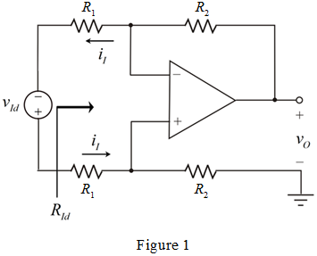
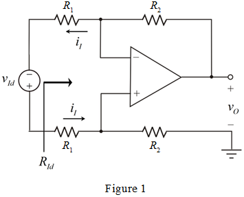

Refer to Figure 2.16 in the textbook for a differential amplifier.
Select  and
and  for better design.
for better design.
Redraw the circuit with the source connected between the two input terminals.

Refer to Figure 2.16 in the textbook for a differential amplifier.
Select and for better design.
Redraw the circuit with the source connected between the two input terminals.

Apply Kirchhoff’s voltage law to the input loop to find the input resistance seen by source, connected between the two input terminals.
The differential input resistance for the differential amplifier is,
Substitute  for
for  .
.
Hence, the value of resistance,  is,
is,  .
.
Assume the voltage source, , to find the expression for the output due to inverting input.
Due to virtual ground concept, the voltages at inverting and non-inverting terminals are same. Hence, . Therefore,
Assume the voltage source, , to find the expression for the output due to non-inverting input.

Due to virtual ground concept, the voltages at inverting and non-inverting terminals are same. Hence, . Therefore,
The voltage at non-inverting terminal due to voltage division is,

Therefore,
Find the differential gain.
Consider that the differential gain, .
Substitute 100 for  , and
, and  for
for  in the equation.
in the equation.
Hence, the value of resistance,  is,
is,  .
.
Thus, the values of the resistors for the design of differential amplifier are,
The expression for the common-mode-rejection-ratio is,
Substitute 80 dB for CMRR,  for
for  , and
, and  for
for  in the equation.
in the equation.

Percentage of the tolerance is,
Therefore, the tolerance is, .